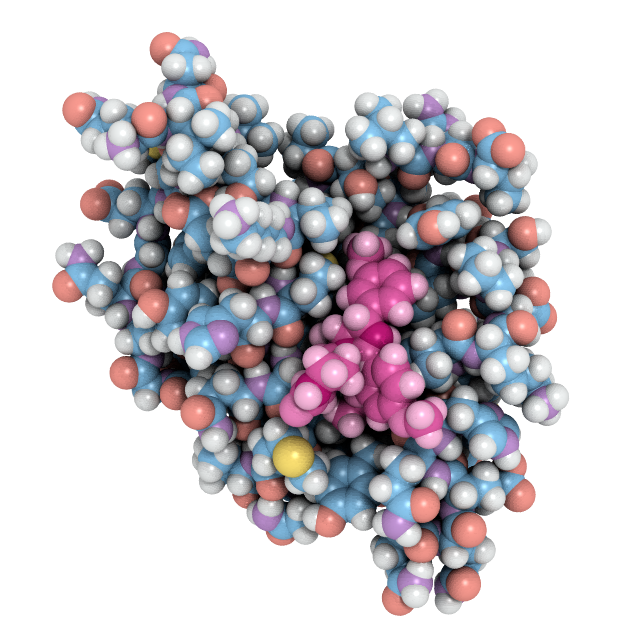

Molecular Dynamics
Home
Home
User Guide
Reference
Course

Practical Molecular Dynamics
Notes for running and analyzing molecular dynamics simulations
Get Started
Molecular Dynamics
Home
User Guide
User Guide
Introduction
Getting Started
Building This Site
Using Plotly
Analysis of MD Simulations Using AMBER
Protein Structure Networks with Bio3D
analysis-gromacs
Molecular Dynamics Simulations with GROMACS
MD Simulations Using MDAnalysis
MD Analysis
MD Analysis
MD Analysis with VMD
Reference
Reference
LigPlot
LigParGen
GROMACS Tutorials
Docking Tutorials
Using VMD
Conda on Colab
Coloring by RMSD
Example Journal Articles
Course
Course
Course Organization
Lab 00
Lab 01
Back to top